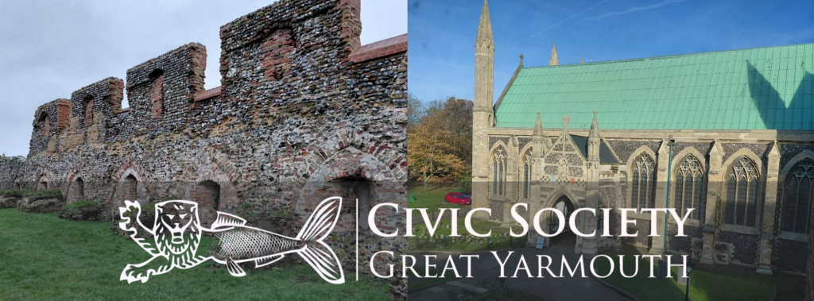

Great Yarmouth Arts Festival — brand identity & marketing expansion
The challenge
The festival engaged Bradford Independent around two connected questions: how its brand identity presented the event, and what opportunities existed to expand its marketing beyond the patterns it had relied on.
My role
Independent consultant, working with the festival on brand identity and marketing development.
Approach
The work started from the same question that starts most projects: what is the organisation actually trying to communicate, and does the current brand and marketing activity say that clearly? From there, the focus was on identifying where the festival's identity and marketing could reach further — and what practical changes would make that possible.
Work completed
- Worked on the festival's brand identity and how it is expressed.
- Identified and developed marketing expansion opportunities.
Outcome
[CASE STUDY OUTCOME NEEDED] — no verified outcome information is published yet. Rather than inventing results, this section will be completed when outcome details can be stated accurately.
From the project


Capabilities involved
Have a similar project in mind?
Tell me what's happening, what you're trying to achieve, and where you're getting stuck.
Or go straight to the source
- harley@bradfordindependent.com
- I'll get back to you within a day.